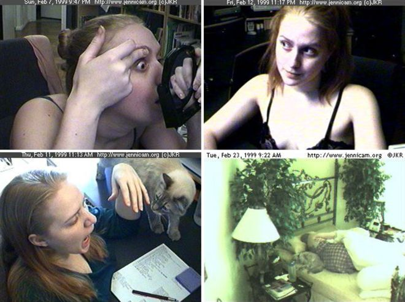
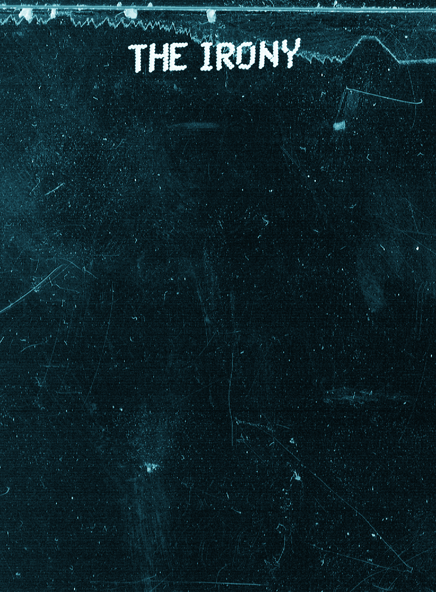
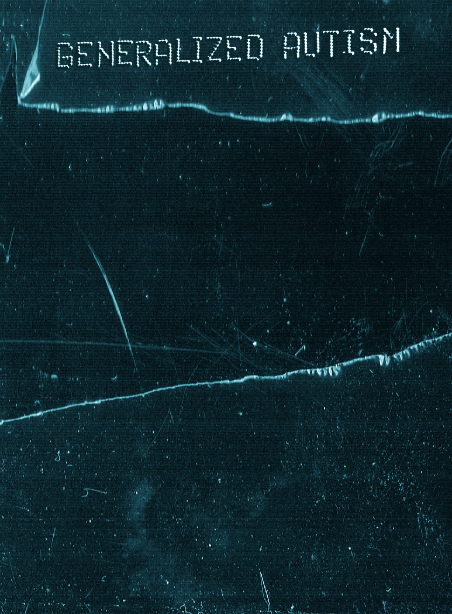
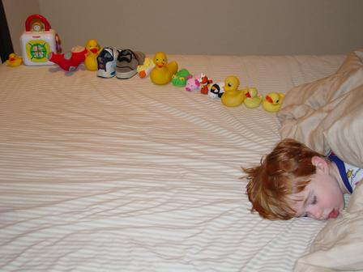
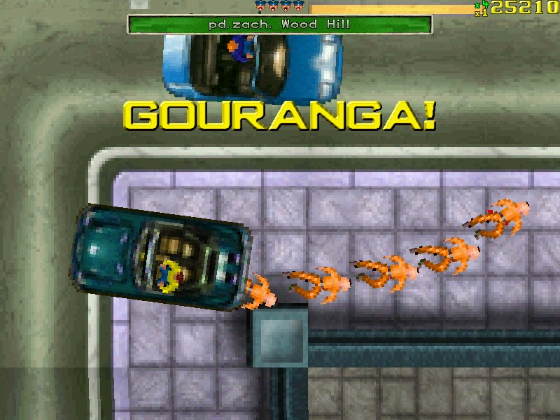
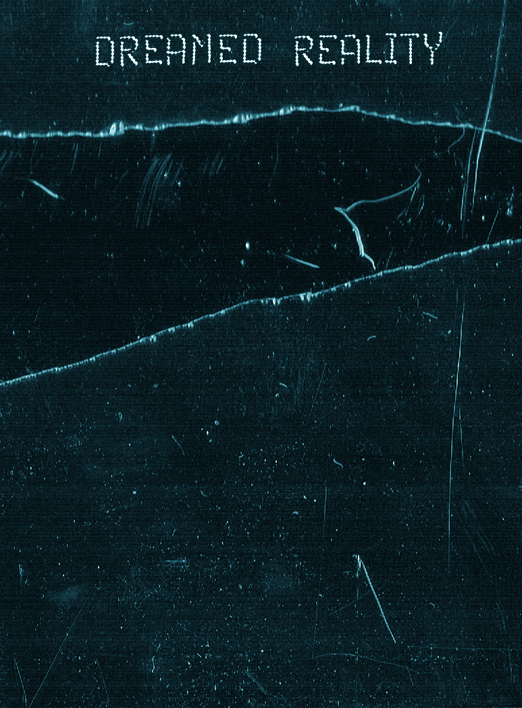
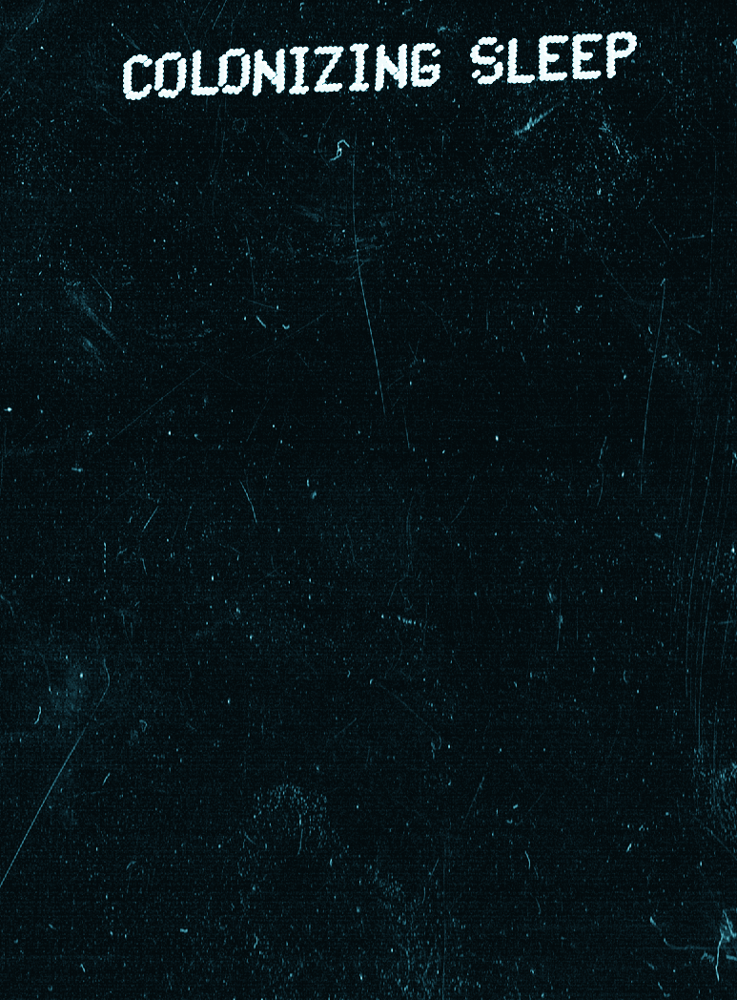
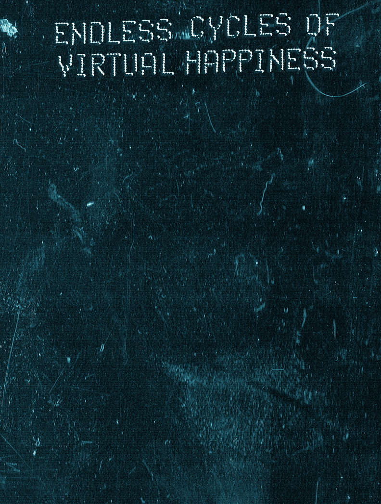
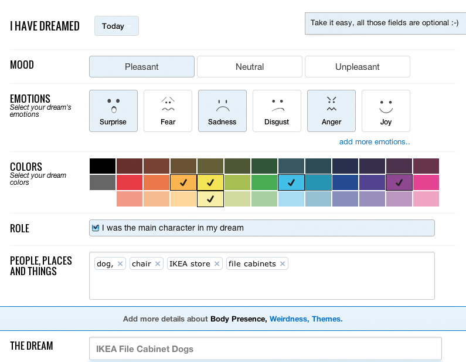

Part 1, Reason for Escape
Televisual Wasteland
Virtual Infinity
Part 2, How to Escape
The True Millennium Bug
The Irony
Generalized autism
Reveal Map
Part 3, Where to Escape to
Dreamed Reality
Virtual Reality
Escaping Linearity
Part 4, The Escape
Colonizing Sleep
Endless Cycles of Virtual Happiness
Dream Design
Conclusion, To Live a Dream
Side note

I have never felt as angry and disappointed at the end of a film as at the end of Into the Wild1 In its final scene Chris McCandless writes Happiness is only real when shared I told all my friends I thought it was a stupid end
My story starts in 1999 the last year before the new millennium a year that has significantly shaped the collective consciousness of the Millennial I want to talk about the millennial and his peculiar fondness of virtual escapism how this escapism came about and what this escape will look like in the future
The 16th of September 1999 the first episode of the Dutch realityTV program Big Brother2 aired The concept was extremely successful and all-around the world Big Brother houses started to pop up realityTV became an inevitable part of my reality RealityTV the vulgar niece of cinema verité made her first appearance in 1971 What distinguished RealityTV from cinema verité was that the people portrayed did not have any significant talent or any particular lifestyle their most important property was their ability to act real Fame became an interchangeable commodity available for a broad audience. In 1971 the PBS broadcasted the first reality TV series An American Family its spoken introduction by producer Graig Gilbert is important for understanding the origin of the millennials alienation from reality It raises important questions about the realness of a life lived under surveillance
There is no question that the presence of our camera crews and their equipment had an effect on the Louds One that is impossible to evaluate It is equally true that the Louds had an effect on us the filmmakers for this was a cooperative venture in every sense of the word The Louds are neither average nor typical No family is They are not the American family but they are an American family4
On the 16th of September 1999 twelve individuals and some chickens got locked up in the Big Brother house and garden in Almere On the 30th of December 1999 Bart Spring in t Veld earned 250000 florins by exposing himself for 24 hours for 106 days Eight years later Bart spoke about his experience and his distaste over celebrity culture in The Times
If its true that I helped to create that mindless monster Im not too proud of itBig Brother took away the need to make inspiring programs and replaced them with mindless chatter Its time to put it in a museum for weird artifacts of television history4
Barts wish didnt come true Never did realityTV come even close to the museum of weird television artifacts Instead the popularity of realityTV took on monstrous proportions and now in its aftermath savors a cult status When realityTV still was in its infancy people had a lot to say for it it was going to make televisual life more diverse egalitarian and democratic From now on it werent some abstract bureaucratic forces from higher up or the gift of a special talent that was going to decide whether you were going to make it in life success and failure became an individual responsibility instead of a communal one a labor of 247 selfmanagement Prior to the finale of the first Idols in 2002 with Jim versus Jamai an enormous amount of window voting poster popped up al over the country over two million posters were printed Obviously Jamai won the first Idols his geeky glasses chubbiness and homosexuality made him exactly the type of real the millennial audience was craving.
The Internet is a museum for the weird artifacts of television history Constant recycling of television artifacts online under the guise of nostalgia and irony has deprived these already volatile artifacts of all origin and meaning images deprived of a historical time frame The oldest pieces in the museum only date back to January 1st 1990 Memes are a symptom of the generalized autism that thrives among millennials Their nature is repetitive predictable and monotone often depicting icons from the 90s A phenomenon such as Only 90s kids will remember compositions of mass-produced toys almost every millennial has played with show a sentimental longing for collectivity that was still adjunct by objects Where Flippos was a physical game directed by embodied perception the Tamagotchi hype was already preparing the millennial for a life of pushing buttons to manage a pile of moving pixels happiness training for the soon to come occupation with the management of various virtual avatars
The rootlessness and anonymity of modernity painfully collides with our primitive usage of symbolic images and objects as tools to connect and understand our immediate surroundings Religious objects and imagery meet the same purpose connecting large groups of people Punishments for idolatry are an attempt to maintain the symbolic power of religious imagery and prevent them becoming trivial In virtual reality everything is from everybody nothing is left unseen The democracy of the global televillage has replaced tribal identities with quasi-independent individual agency
The organization of people into purposeful groups is more and more founded on the precisely manufactured bodiless experiences that are shared on social media than actual shared experiences Individuality is flattened out by the monotony of interfaces designed to interact with millions The millennials private and public life has almost fully blended work and leisure have become indistinguishable Concentration has become the millennials most valuable expense and the attention of the other the acquisition he desires most A significant figure one of the first to make business with selling privacy was the DotComGuy5 DotComGuy was a former computing systems manager who legally changed his name to DotComGuy from Mitch Maddox in 2000 His project was to live for one year beginning on January 1 2000 without leaving his house in Dallas Texas ordering all food and necessities off the Internet and having them delivered The house was monitored 247 and several video feeds were streamed online DotComGuy found a way to exploit his privacy to the extend that his life became the show he was working all the time
Paradoxically the sense of community the millennial has lost with the upswing of technology is what he is trying retrieve with its applications RealityTV social media and other reality media harken back to a sense of community before the artificial abstract divisions that have been instituted by mass society Prior to these divisions the activities of work the domestic and leisure took place within the same space or closely overlapping spaces The home for many, was a site of production a place for making the homemade products whose manufacture migrated out of the household with the rise of consumer society6 Programs such as Big Brother or Utopia are nostalgic throwbacks to community life The appeal of the real is lined up alongside that of the resuscitation of community as well as the critique of the abstraction of artifice The virtual office has allowed for greater flexibility at the same time eliminates the need to commute and therefore minimizing downtime The chat at the coffee machine or water cooler in the office has been replaced by virtual equivalents In her essay On Television My Strange Addiction The sleazy wisdom of Big Brother journalist Emily Nussbaum from the New Yorker confesses her secret habit of Big Brother binge watching She explains how Big Brother was nourishing her need to commune when she was freelancing and mostly working at home she found comfort in the same device that had caused her disconnection
It would be neglectful for this critic to write about the CBS reality series Big Brother now in its fourteenth season without making a troubling confession twelve years ago I was a Web watcher This means that I didnt merely watch Big Brother episodes many nights a weekan embarrassing enough revelationbut also online via 247 streaming footage Each morning I would stumble into my living room and open my laptop letting the characters who were in California three hours behind sleep on the screen like pets In my defense I was freelancing at the time I needed the company7
Not only was Nussbaum watching her hamsters in sweatpants Big Brother was also watching Nussbaum The online blend of working time and private time has created the ideal environment for extensive data mining and surveillance A post by webcam pioneer Jennifer Ringley from Jennicam perfectly illustrates the danger of this toxic mixture
It feels like Im working all the time Moving back towards a traditional job and spending less time on the site will help that hopefully Id like to feel a little less guilty when I actually do leave the house
Ringleys life work was that of being watched any attempt to have a life beyond the camera undermined her livelihood she was now taking a traditional job to escape her own invention Now we are all JenniCam A contrary model where many are watched by a few has replaced the traditional TV model of a few watched by many The inevitable power of big tech thrives on triviality and disunity


Many had predicted the worst for the new millennium among other things the disastrous effects of the Millennium Bug It was the first and last time I so strongly felt a collective fear of the power of technology The Millennium Bug aka the Year 2000 Problem was the fear of major software errors around the globe due to the formatting and storage of calendar data Twentieth century computer data was often stored by using only the final two digits of the year making the year 2000 indistinguishable from 1900 Experts later declared that the Millennium Bug was mainly scaremongering by the media and that they already knew it was not going to be as big a problem as suggested I remember the rumors fear and the excitement over the threat of the Millennium Bug I remember collectively being scared of exploding computers felt really cozy
January second 2000 still no computers had exploded Not long after the annual change our TV was broken I was 11 years old and my parents decided not to repair nor replace it Its disappearance left a big empty space in the part of the cabinet that had been especially designed for a TV and where nothing else can be put without looking out of place

Televisions have become a rare phenomenon in the living room of the millennial furniture is no longer arranged facing the same angle reality is being streamed right into his lap Television has lost its prestige the economic excess of the 90s and its visual legacy has formed the fundaments of its successor the Internet The Internet was fresh young and innocent and the millennial was the one in control of it The youth of the millennial simultaneously was the youth of the Internet serving as the foundations of its standards and morals The ironical selfconscious mindset of television and the children it had nurtured continued to develop to extremes online

The ironist is invincible Irony can be understood as a defense against the dangers of putting forward ones own opinion for others to respond to The fear of being ridiculed made the millennial dwell in selfprotective cleverness The millennial plays with the blocks he inherited from the world he was thrown in trying different formations sequences and compositions in the end ultimately bored and unable to think of a new variety the millennial leaves the blocks for what they are and looks for comfort in the endless possibilities of the virtual A generalized autism is spreading among millennials an internal error I think is the true Millennium Bug
Democratic good manners and infinite awe for the autonomy of the other blessed the millennial with a youth without much exposure to conflict The millennial did not very often had to revise his take on things If you are not attached to anything in the first place it will never be choice worthy for others It is like talking to anonymity Advanced economies are moving away from producing goods or delivering services but create experiences Managing frustration by sidestepping the fragility boredom and harshness of everyday life is a growing industry the need for manufactured experiences is met by affective capitalism

In his book The World Beyond Your Head Matthew Crawford talks about the situated self a self that explores the world through embodied perception Crawford brings in the Mickey Mouse Clubhouse as an example of a reality mediated by technology When one of the Mickey Mouse Clubhouse residents encounters a problem he or she just calls for help and a machine will appear that will fix the problem The show is devoted to not capturing experience but psychological adjustment There is no frustration in the Mickey Mouse Clubhouse only readymade solutions Crawford speaks of a future where the world has become frictionless as thought itself smartness will subdue dumb nature8 Mickey Mouse Clubhouse that first aired in 2006 is in sheer contrast with a smallscale production like Purno de Purno9 which although controversial and bizarre depicts a reality that celebrates lifes liveliness Purno gets beaten up by his first date gets lost in a vagina cave and even gets scammed by his best friends
The enlightenment rationalism instinctively distrusts irrationality and is controlled by positivism That what resides inside the head is pure that what resides outside the head is ordinary and most of all subjective material When the body is separated from the physical world the natural sequence of action and reaction is interrupted creating a potentially dangerous cycle of endless contemplation in which eventually everything is fully philosophized
Developers of technology are very aware of the millennials fondness of bodiless experiences explaining the popularity of products like the Hoverboard and Segway Natasha Dow Schüll explores the link between product design and addiction in her book Addiction by Design Machine Gamblin in Las Vegas There she notes
Autistic children are an exception they remain distressed when an exogenous entity does something that demonstrates vitality of its won and they are especially intolerant of social contingency or the unpredictability of anothers perspective or intentions Preferring sameness repetition rhythm and routine they retreat into circular selfgenerated perfect contingencies such as rocking or swinging or objectbased interactions that allow closetoperfect stimulus response circuits such as bouncing a ball or pressing a button10
The more technology will take in the position of middleman between millennial and reality the more generalized autism will evolve In his Society of the Spectacle Guy Debord already mentions generalized autism when he quotes Joseph Gabel
The decay of the dialectic of totality and the decay of the dialectic of becoming seem solidly united The spectators consciousness imprisoned in a flattened universe bound by the screen of the spectacle behind which his life has been deported knows only the fictional speakers who unilaterally surround him with their commodities and the politics of their commodities The spectacle in its entirety is his mirror image Here the stage is set with the false exit of generalized autism
The removal of praxis and the antidialectical false consciousness which accompanies it are imposed during every hour of daily life subjected to the spectacle this must be understood as a systematic organization of the failure of the faculty of encounter and as its replacement by a hallucinatory social fact the false consciousness of encounter the illusion of encounter In a society where no one can any longer be recognized by others every individual becomes unable to recognize his own reality Ideology is at home separation has built its world11


Many people have puzzled over the secret of creativity I contend that it is basically no more than the extension into adult life of these childlike qualities The child asks new questions the adult answers old ones the childlike adult finds answers to new questions The child is inventive the adult is productive the childlike adult is inventively productive The child explores his environment the adult organizes it the childlike adult organizes its explorations by bringing order to them strengthens them He creates12
The imbalance between organization and exploration in the millennials high performance environment forces him to stick to limited activities he knows well With no time or energy to spare efficiency always comes before creativity trapped in what Max Weber termed the iron cage Stuck in systems based purely on teleological efficiency the millennial will only he will risk exploration in extreme situations Desmond Morris speaks of two types of exploration: panic exploration and security exploration Experiments with chimpanzees have shown that their exploratory potential can easily be encouraged but they seem to prefer a scraping by existence not too difficult not too easy Continues habitation of cyberspace makes the millennial oblivious for the fragility and transience of actual living things Occupied with the management of a self which high maintenance leaves room only for a scraping by existence the millennial tries to cheat life like he used to cheat Age of Empires hitting REVEAL MAP to avoid wasting time on external exploration
Both Crawford and Debord describe a fondness of bodiless experiences as a symptom of generalized autism a natural preference for a reality that is manipulative controllable adventurous exclusively visually and consequenceless Generalized autism is as state very similar to the experience of dreaming liberated from the obstructiveness of the body we experience our most lively and outrageous moments Escaping the hectic of daily life is a motivation often used to excuse binge watching series or game addictions sleep serves the same purpose as its virtual equivalent a temporary escape from linearity
The potential of the Internet as a global democratic and egalitarian platform is starting to be questioned now that it is showing its decidedly nonrevolutionary deployment In Reality TV The Work of Being Watched Mark Andrejevic describes this as The portrayal of surveillance as a form of selfempowerment by the promoters of the online economy13 In 24/7 Jonathan Cracy suggest the future being so close at hand that it is only imaginable by continuity with the striving for individual gain or survival in the shallowest of presents14 If the millennial is unable to establish intimate relationships with the images that surround him none of the images becomes familiar enough to constitute merely the background of his life Eventually the millennial will live in a reality in which time has become cyclic a true consumer society driven by a process in whose every recurring cycles things appear and disappear15 In a world in which things will be as quickly devoured and discarded as they have appeared an establishment of shared recognition common interests or goals is damned community plays only a regressive part in an economy of desire His dependence on quasiautonomous products forces the millennial into an endless sequence of openended tasks and routines
When I was around ten years old and inspired by The Sims I often pretended that my life was a videogame While walking home from school I would imagine my green energy bar slowly getting orange and my hunger bar would always be alarmingly red After having a talk with my friends on the climbing rack in the courtyard I could feel my social bar going up followed by a slight rise of the happiness bar I applied the interface construct I had used to pursue virtual happiness in real life organizing my life according to The Sims standards A game in which life can be fastforwarded cheated when difficult and can always be paused for shopping wasnt doing much good for my realism
I always had a special likeness for simulation games such as Zoo Tycoon Rollercoaster Tycoon and The Sims where you spend most of your time either managing or creating I enjoyed operating like a mighty God in a timeless time of formative creation and perpetual creating Even though running over people with a car is for many of us a familiar exclusively virtual experience terrorists seem to be able to switch to game mode in waking life I remember the excitement when playing Grand Theft Auto16 and I would hear the drums and hums of an approaching group Hare Krishnas the Krishnas would always walk in line making them the perfect target to run over and score loads of hits Technology in its materiality isnt necessarily dangerous it is the instrumentalization and adaption of how it unconsciously operates which will be a dangerous aspiration
Virtual individuals are catered with mediated experiences that meet their customized realities realities they have organized according to interface standards Realities organized according to interface standards put the individual in a God like position creating distance between him and the world ruling out things that can cause unwanted interferences such as others Escaping linearity in the cyclicality of the virtual the millennial no longer needs to turn away in order to become to create something new but will be in a constant state of flux In Simians, Cyborgs and Women Haraway argues that tools are the central motor behind our transition from ape to man17 Currently technology is our most prevailing tool causing an extensive growth of interface mediation and vice versa an advancement of generalized autism


The only time we dont consume is when we sleep Sleep is seen as obligatory downtime solely undertaken for its health benefits Solitude and stillness are things that have to be consciously looked for instead of a daily recurrence Gary Snyder from the Beat Generation described this state as True affluence is not needing any thing The nonproductive state of sleep is undesired affective capitalism aspires replacement with a substitute that mimics the cyclical time frame of dreams The millennials need for a brief daily getaway is met by lucrative virtual equivalents after all devices never really sleep

Night after night our dreams practise philosophy on their own account Sigmund Freud thought of dreams as an outlet for oppressed emotions and desires He believed civilized people that are constantly oppressing their impulses need dreams to fulfill these desires and free them of their burdens While dreaming the egos defenses are lowered and the repressed material comes out sometimes in its most distorted forms Assured by the impossibility of anybody watching along man can finally be his most outrageous self
Freud spoke of dream works when an underlying wish the symbolic meaning of the dream, the manifest, the content of the dream that what the dreamer remembers after waking up merge The manifest is often bits and pieces based on the events of the day Freud argued that the biological purpose of a dream work was to transform a forbidden wish into a nonthreatening form By transforming the underlying desires and wishes of the dreamer into abstract actions that were executed in the dream the dreamers gained relief and satisfaction his wishes and desires were unconsciously granted Freud believed that the biological and social function of dreaming is to eliminate potential threats for society The deformation of the dreamed material keeps the dreamer unaware of his or her deepest desires and doesn’t recognize them as such Objects and persons often symbolize very different things than what they mean
One of Freuds patients hated his sister in law and often referred to her as a dog during his sessions Later he told Freud he had a dream in which he strangled a small white dog Freud interpreted this as his wish to kill his sister in law If the patient actually had dreamed of murdering his sister in law he would have awoken in terror and guilt His sleeping brain had transformed his sister in law into a small white dog to protect him from guilt and shame
Dreams are encrypted decoding them takes time and effort Carl Jung has always emphasized that no dream interpretation can be done without the dreamer The psychoanalyst doing the interpretation must be properly informed about the life of the dreamer Jung despises what he calls vulgar little dream books that have developed under the influence of perceived notions
The dream is a fragment of involuntary psychic activity just conscious enough to be reproducible in the waking state Of all psychic phenomena the dream presents perhaps the largest number of irrational factors It seems to possess a minimum of that logical coherence and that hierarchy of values shown by the other contents of consciousness and is therefore less transparent and understandable Dreams that form logically morally or aesthetically satisfying wholes are exceptional Usually a dream is strange and disconcerting product distinguished by many bad qualities such as lack of logic questionable morality uncouth form and apparent absurdity or nonsense People are therefore only too glad to dismiss it as stupid meaningless and worthless18
Never did I have a boring dream Never did I have a dream in which I was making a phone call or sitting behind my laptop My dreams are always peculiarly devicefree A Lifehacker article on lucid dreaming suggests thinking of the dream world as a mental rehearsal space where you can go over your big presentation for work or even further your studies before a big exam Only one replied in shock Ive heard of taking work home with you but this is too much man Youve unlocked the infinite potential of your subconscious what are you going to do with it Probably catch up on emails and work stuff19 Dreams are a natural counterweight to reality presupposing everything has a dual nature The monopoly of science on the truth has led to a repression of the unconscious muting an important voice of the democracy inside our head
Youve unlocked the infinite potential of your subconscious what are you going to do with it Probably catch up on emails and work stuff19 Dreams are a natural counterweight to reality presupposing everything has a dual nature The monopoly of science on the truth has led to a repression of the unconscious muting an important voice of the democracy inside our head
We sleep to dream and we dream most of the night The new information is sorted and filed and we awaken with a refreshed brain ready to start the next day If daytime living becomes too frenzied if we are too intensely overstimulated the ordinary dreaming mechanism becomes severely tested This leads to a preoccupation with narcotics and the dangerous pursuit of Chemical Dreaming20 Commodities that mimic dreaming such as drugs meditation yoga mindfulness and virtual experiences are a lucrative market The popularity of these dreamlike activities among millennials indicates a generic need to the escape the pressures of linearity
With its advancements in bodiless experiences technology is creating a loophole in time The next step would be the colonization of dreamed content In virtual reality products dont manifest themselves as physical goods they take on a more abstract form that of mediated experiences Debord described this in 1967 as the materialization of the abstract will When living in a capitalist society dominated by spectacle concrete things are automatically the master of social life Where reciprocally the dreamed activity of idealism is equally fulfilled in the spectacle through the technical mediation of signs and signals which ultimately materialize and abstract ideal21 Digimodernism has created a whole new array of pseudoactivities and pseudoparticipations In our manmade diorama we are both Truman and Christof actor and executive producer of the show Things appear in circles Not concrete things are the master of the millennials social life but virtual representations In an overdesigned world the ultimate in design may not be the design of objects but selfdesign22 The millennial produces all the details of his world with every increasing power and thus finds himself more separated from this world The ability to design his dreams would mean the completion of the millennials customizing powers The creation of a space where the millennial can reevaluate past present and future experiences by endlessly unwinding and rewinding them All he needs is an interface that provides him with this opportunity preferably an interface inside his head
Television was a mental wasteland and dreaming isn’t noted as a special attribute of the higher intellectual functions either making it the perfect source of inspiration for affective capitalism The two species that get the most REM sleep are the opossum and ferret species that arent famous for their mental acuity says Dr Jerome Siegal a psychiatrist at the University of California Los Angeles Many studies have been done on dreaming; most rely on self-reporting from participants or are exclusively neuroscientific actual dream content until today remains unseen
The bizarreness of dreamed content is the ultimate attribute to its privacy The dream doesnt make any sense to anyone except for the dreamer and is often not of any interest to anyone else A study done on dream coherence by Dr J Allan Hobson from Harvard Medical School a psychiatrist and leader in dream research explores the function of bizarreness in dreaming Dr Hobsons group took segments from different participants dreams recombined them and showed them to other dream researchers to see if they could tell a real dream from a composite Contrary to Hobsons expectations the judges could not distinguish intact from spliced dreams suggesting that the observer not the dreaming brain imposes coherence on a dream23 Many maybe inclined to believe that scientific inquiry will never be able to fill the gap in our knowledge that Hobson has drawn to our attention but by trying to understand these internal representations of the world we can use its concepts and symbols to help us deal with our waking experience24
A study of hardcore gamers has provided some insight in how waking experiences in this case playing video games influence the individuals experiences of sleep Some of the gamers questioned during the study seemed to have overcome the bizarreness of their dreams Verbal reports from gamers and nongamers on their dreams showed that hardcore gamers were more likely to experience lucid dreams in which they for instance could toggle between first and third person view Used to taking control of extreme and often bizarre situations in their games they were also able to take control of the frightening and threatening situations they encountered in their nightmares Hardcore gamers have discovered a bodiless version of embodied perception a mind that is so competent in controlling the interfaces that mediate between the virtual and the mind that it can imagine one in order to stay in control of stressful situations The millennial is able to create imaginary interfaces to avoid direct confrontation with reality Creating an indefinite reality in which things can endlessly be repeated and reconstructed

The millennial seems to have lost the basic human faculty Italo Calvino describes in his Six Memos for the Next Millennium as the power of bringing visions into focus with our eyes shut24 In the unending rainfall of images the millennial in his turn multiplies them by means of a phantasmagorical play of mirrors The marginalization of interludes for contemplation has led the millennial to reason from swiftness and temporality
The true millennium bug has proven not to be a computer software error but a loophole in time Machine domination shouldnt be our biggest fear but the lack of an extended time frame The future Aldous Huxley describes in A Brave New World is a world organized to interface standards the daily perpetual flood of irrelevant and trivial information distracts the people from anything of importance Happiness is the sovereign good and the purpose of life is the maintenance of wellbeing In this world there are no losses and therefore no need to search for things that will substitute these losses Science and technology have freed them from all their losses and made them independent of God
How does he manifest himself now asked the Savage Well he manifests himself as an absence as though he werent there at all Thats your fault Call it the fault of civilization God isnt compatible with machinery and scientific medicine and universal happiness You must make your choice Our civilization has chosen machinery and medicine and happiness Thats why I have to keep these books lock up in the safe Theyre smut People would be shocked if25
In Huxleys world people are nurtured to numbness Politics creativity and exploration are expunged by the monotone sameness of the standards of living When people do feel the urge to explore or experience feelings of sadness they take a drug called Soma the drug induces a sleep like state called a soma break The drug is used by everyone on a regular basis often used as a refreshing reenergizer and sometimes used in a high dose for a Soma holiday a trip that can take over 12 hours The drug provided by the government has depoliticized all individuals all political figures in A Brave New World don’t take Soma In this case the dream like state is drug induced in our future the state will more likely be virtually induced
The photographic science fiction novel La Jetée by Chris Marker depicts a man that travels through time in his dreams again drug induced dreams First the scientists send him to an eternal present later they higher the dose and he visits both past and future
Having only sent lifeless or insentient bodies through different zones of time the inventors where now concentrating on men given to very strong mental images If they were able to conceive or dream another time perhaps they would be able to live in it
The camp police spied even on dreams26
They have chosen the man because of his obsession with an image from his childhood using this image as an anchor to travel through time The mans visits to the past are successful but the future is better protected than the past When the man attempts to change the future by interfering with his past the experiment is interrupted he discovers there is no way to escape time The failure of his attempt to surpass the linearity of reality shows its inevitable strictness In trying to converse with the woman from his childhood image he broke the individuality of cyclical time an eternal presents that is experienced independently from communal linear reality
Neurophysiology does not and cannot at the present stage of scientific inquiry explain the specific content of our dreams From my perspective dreaming is just thinking in a very different biochemical state says Deirdre Barrett who teaches psychology at Harvard and is editor of the journal Dreaming The threads can be just as complex as waking thought and just as dull Their visuals are overwhelming and language and logic are less important27 It might be that dreams are as scientifically insoluble as religion Kelly Bulkely former president of the Association for the Study of Dreams has given his take on this in his book Transforming Dreams Learning Spiritual Lessons From the Dreams You Never Forget where he writes that some scholars have gone as far to argue that religion itself might have originated in dream experience28
Neither God nor any religion has dropped into mans lap straight from heaven but is something that he contains within himself and for this reasons can produce it all out of himself It is idle to think that nothing but enlightenment is needed to dispel these phantoms29 Like myths and fairy tales dreams are impossible phantasms but their moral meaning is obvious to anyone who reflects upon it We have to treat the dream analytically just like any other psychic product we must suppose that its constitution and function obeys the same laws and purposes until experience teaches us a better way Brain scans have shown certain brain centres turning onthe emotional seat of the brain and the part that processes all visual inputs are wide awake one vital area goes absolutely dormant: the systematic and clearthinking prefrontal cortex where caution and organization reside


Developers of apps are currently exploring the economic potentials of our downtime Most sleep apps are focused on the health benefits of a good night sleep Sleep Talk is one of the few apps that is trying to get a grip on dream content Sleep Talk monitors your night in the hope to catch you talking in your sleep The following morning you can listen to recordings of yourself either talking or snoring After downloading the app I was a bit hesitant to use it it felt like an intrusion of a time in which I was at my most vulnerable unable to control or manipulate a desirable outcome

Our urge to oppress irrational things with statistics is very present in sleep apps promotional videos for these aps often show people smiling while sleeping with their phones next to their faces like or advertise with slogans such as How to make the most of the missing third of your life These advertisements show the millennials fondness of thinking through imaginary interfaces that they use as measuring constructs to rationalize and organize the perpetual flood of daily decisionmaking and so to be able to label certain experiences with certain values That humans have great adaptive powers is not something new what is new is that we are adapting almost 247 Accelerating technological advancements will make decisionmaking the millennials far most important daily activity I foresee a future in which eventually imaginary and virtual interfaces will fully blend making reality and an abstract ideal of reality indistinguishable
Most apps make audio recordings during the night to monitor the movements of its users so it can present new graphs and statistics every morning Users are encouraged to use these results to improve their obligatory downtime in order to spend this regained energy on more profitable activities the next day The Internet dictum When the product is for free you are the product30 makes me wonder about what will actually be sold to the sleeper after his night shift of voluntary data mining Sleeping pills a new matrass albums with calming bird and ocean sounds artificial dreams In a review of the Sleep Like Android app a user complains Video ads first thing in the morning are super unappreciated Especially when it glitches and you cant turn the screen on to exit the ad The millennials often naïve overall acceptance of new tech gadgets intruding his privacy hasnt gone unnoticed, while reading some of the advertisements for sleeping apps developers seemed unbothered by their apps Orwellian like qualities and dont even try to hide them
Its one of the most hassle-free ways to monitor your night and at 99 cents its the best deal in dreamland
The New York Times
The Sleep Cycle Alarm Clock analyzes all your movements when asleep and knows when you are in REM sleep the app only wakes up the user when not in REM sleep making him feel more refreshed The user has to place his phone next to his head either on a bedside table or his matrass
I was a little skeptical at first but Ive been surprised by the results
Wired
Ive used the app for months now and truly believe it works and I love seeing graphs of my sleep patterns over time
The Wall Street Journal
Other apps like Shadow besides gathering data also try to pick up dream content Shadow provides its users with as many graphs as he wants but also gives him the opportunity to track his dreams Users of the app can record or write about their dreams Shadows goal is to build the largest dream database in the world Depending on your privacy settings you can either share your dream content or keep it private allowing the identitycleansed data to be pushed to a giant cloud where global dream and sleep patterns are analyzed Soik one the developers of the app says Theres a lot going on in the subconscious mind that if you can start to pull out little details you start to get a wider picture of yourself Here Soik is using exactly the same argumentation participants of reality shows use to motivate their participation being transparent means to learn about oneself Participation is not motivated by money but by the notion of learning and developing oneself in the context of a social experiment Virtual media often push the notion that to know one realest self is key to being his most optimized self To become his most optimized self the millennial no longer consumes products but the experiences affective capitalism offers experiences that place the most optimized self in a reality that runs parallel to living
Shadows goal is to create a massive dream database that can be used to analyze the collective subconscious and potentially be an information source for scientists who study dreams Soik explains We can monitor our heart rate calories burned and how much sleep we get each night but we have little understanding of how it connects to the bigger picture of self We want to be the next level which is this whole psychological layer we want to say what does this data mean to me If I walk 10000 steps do I fall asleep 5 percent faster do I have more positive dreams31 Shadow is an app that got one step closer to the colonization of sleep it takes advantage of the millennials desire to get real and persuaded him to sell his most intimate possession his dreams
Soik talks about how Shadows database can be used to analyze the collective subconscious which I think is a smart and lucrative investment Soik can potentially use all this gratuitously gathered data to construct virtual dream worlds The bigger the data base the wider the choice the greater the freedom the more attractive will be his artificial dreams
In the tradition of dream analysis it was Freuds greatest achievement to put dreaminterpretation on the right track Because above all he recognized that no interpretation could be undertaken without the dreamer The words composing a dream have not just one meaning but many meanings Dreaminterpretation is in the first place an experience that has immediate validity for only two persons Stereotyped interpretation of dreammotifs is to be avoided the only justifiable interpretations are those reached through a painstaking examination of the context32 Assuming the always short on time millennial does not have the patience to painstakingly unriddle his dreams an artificial equivalent in which he can spend his downtime more efficiently would suit his needs Shadows database could be linked to an algorithm that composes and produces artificial dreams dreams that can be customized to fit individual needs

Capitalism has made freedom of choice its handmaiden Numbed by endless choices and selfresponsibility the fantasy of autonomy comes at the price of impotence The real threat is not the colonization of sleep but how its instrumentalization can inspire big techs development of virtual happiness Where in a Huxlean future people their liberties have been taken away by brainwashing them with pharmacological methods that induce endless comfort I envision a future in which the cyclicality of customization has made our liberties too great resulting in a discomfort that will endlessly warrant the pursuit of virtual happiness In this future the development of artificial dreams will bring into being a 247 governable consciousness the constant aim for greater optimization will eventually replace all dreams with dreamconstructs A total submission of the human body to interface standardization a mentality in which all needs are met by the mouse click agency of contemporary life will be the last step into the loophole out of time No longer will nightly visits of the unconscious leave the dreamer puzzled dream design will make the unconscious explainable shareable and ultimately trivial
Dreamconstructs virtual equivalent in which dreams are customized constructed and directed by and for the dreamer by technology creating a virtual world that is very similar to the world experienced when playing a first person shooter
Lately I have recurring dreams in which I drink from a beer bottle with a broken neck in the presence of a person that is a merge of my lover and a recently deceased 21year old rapper I am desperately trying to get the pieces of glass out of my mouth before swallowing them Last summer I often dreamed about chasing and killing hares and rabbits In one I was in a café and baby rabbits were handed out and everybody had to break his or her baby rabbits neck at the same time like a toast I couldnt do it and left the café without breaking the neck of my baby rabbit
I wouldnt describe these dreams as nightmares neither as pleasant or neutral I think I know what they mean I cant label them by colour and neither did the people in them have familiar faces I try to fit a dream in which I am forced to bare-handedly pop out the eyes of an enormous aggressive hare to the parameters offered by the interface of the Dreamboard app It angers me it turns every dream in systematic twaddle



I imagine a future in which the annexation of dreams by affective capitalism will make dreaming into a truly corporate venture In a world in which active exploring through selfproduced movements is needless there will only be recurring patterns The absence of a bodily centre rules out any axis of proximity on which to place events in time creating a reality that sidesteps linearity and therefore does not have a future or history The joys the millennial experiences when dreaming and the joys he experiences in the virtual root in the same source the notion of pure momentary presence or simply living in the moment The joy of the absence the absence of the daily linear time frame that makes an evermore heavier comeback every time he returns to it I foresee that the millennials endless desire for disenchantment and control will drive him to simply replace everything that is ungraspable with the governable Deprived of his dreams without any zone of relevance to get him oriented the invention of a surrogate for dreams will be his final push into the eternity of cyclical time With a click or a nod dreams can be replayed relived redesigned and eventually shared artificial dreams could mean the completion of virtual happiness The millennial will rest in his artificial dreams after picking sleeping from the tab relaxation and mindfulness After yesterdays pick rehearse presentation upload pdf from the category education and professional practice he deserves it
To the extent that necessity is socially dreamed the dream becomes necessary The spectacle is the nightmare of improved modern society which ultimately expresses nothing more than its desire to sleep The spectacle is the guardian of sleep33
The deficiency of the interfaces that are currently being developed to grasp the experience of dreaming shows a fundamental misunderstanding of the uncontrollable nature of the thing that they attempt to get in control of Eventually the misunderstanding will get frustrating which will be the motor behind the development of alternatives that dont frustrated Things that do work replace old things that dont work If sleep can replaced by something more purposeful and exciting it will be
With their unending statistics graphs categories and overviews most dream apps could easily be mistaken for accounting apps In a near future visible interfaces will become superfluous their limited capacity evidently seen in dream apps will obstruct further development What will live on is thinking in interface morals and standards Future dream design wont be done on apps nor on any other device but will be streamed straight into the brain Eventually a utopian alternative reality build on dreamconstructs will become an indefinable reality that so perfectly mirrors only the joys of the real it will be a universally preferred residency I imagine a future in which our freedom in lifecustomization has become so unlimitedly extensive we all choose to live a permanent dream
The colonization of dreams is just at its beginning and we still occasionally experience embodied perception but the profits that can be made out of this enormous and yet unconcerned terrain havent been left unnoticed One thing technology has proved us is that it is never slow nor sleepy The millennials habituation to mediating interfaces has resulted in a frictionless existence wherein comfort and happiness are the sovereign goods Virtual reality explores the possibilities of experience without the limits that define us as humans Creation ex nihilo the hours the millennial invested in clicking their Sims towards perfection and running over Hare Krishnas for the sake of career goals will pay off. In his pursuit of virtual happiness and overall mastery the millennial will eventually hand over his dreams in exchange for the missing third of his life Transforming himself from helpless onlooker unable to alter the course of the story developing before him, into the designer of his own dreams The millennial doesnt have to fear a uniform future when eventually the last place he can still dwell in passivity and escape the paralyzing extensiveness of freedom of choice will be replaced by his own carefully directed artificial dreams he will realize that multiplicity is just as frightening These dreams will mimic the joys of life infinitely and before the millennial has a chance to get accustomed and bored with his fake dreams there will be a spectacular update
The millennial is given so much that he will be reduced to passivity and egotism His desire for disenchantment will leave him empty handed robbed of his nightly consults with his unconsciousness The happiness he pursuits is shared but not real I also suffer from the true Millennium bug but maybe my earliest millennial memories could transform my error into a feature Our memories of the Millennium bug that in 1999 momentarily cracked the illusion of our mastery over technology will forever remind us that it often operates beyond our control and customization to a great extend is just an illusion The millennial should be suspicious of the new commodities affective capitalism produces especially for him which are no longer products but selfdesign choices To be part of the last generation that has known a before and an after should remind him to safeguard his offline time travels Every night he experiences the liveliness of the undesigned reminding him that real dreams maybe arent meant to come true but are only there to awaken
I am walking on a crowded, dark, and rainy boulevard I have a bunny in my arms The people that walk past me dont feel like strangers even though I dont recognize their faces The bunny in my arms starts to trample he is trying to escape I tighten my grip and start walking faster I get nervous and think about where to dump this bunny The sea is swirling and it is windy everything looks cold I dont feel cold I enter a small building alongside the boulevard I enter a small damp room there is a guy standing there and without saying anything points at a couple of cages standing in a corner In the shimmering of the weak TL light I notice that the walls behind them are full of fungus Most of the cages are empty one is occupied by a hamster The little side door of one of the empty cages is open I try to fit my bunny through the little door A sharp piece of a broken bar is sticking out and scratches the skin of my bunny Its white fur turns red I feel guilty I quickly close the cage door and go outside I am back on the boulevard I wake up
At the office I am thinking about what I want to dream tonight I decide to treat myself with something new I heard some great stuff about a new update that enables you to reexperience one of your old disturbing dreams in a more satisfactory fashion
That night I walk on the boulevard of Scheveningen It is sunny and I carry a bunny in my arms I sit in the sand and stroke my bunny The people that pass by have familiar faces We talk about stuff we have already talked about before I enjoy myself I might jump of a building later I like feeling weightless I know I wont die The dream is over I have had a pleasant time I decide to label this dream with the colour yellow
Later that day I watch the newest Indiana Jones I am inspired I take a mental note of some keywords I will use them for the customization of a predesigned adventure and survival dream later Jungle snake green lasso hat rope fire cave archaeology tweed suit Incas I am out of inspiration The algorithm suggests some related keywords I OK them all My dream is being prepared a synopsis is presented to me I skip it I dont feel like reading now I give the final OK and drift off